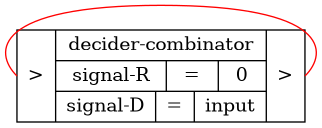
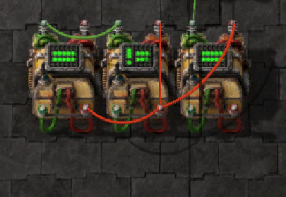

Multi-port Random Access Memory in Factorio
2022-11-12
The following is written for my WKRPT-200 report.
- Summary
- Introduction
- Factorio Circuit Network
- RAM Design Considerations
- Design Detail
- Analysis
- Conclusion
- Memory Cell Generation Code
- Tools Used
- References
Summary
Factorio is a game of building and maintaining factories. It has a Turing complete circuit network that resembles real-life digital circuit. A multi-port RAM is a memory device that can be read from or written to in any order at the same time. This report aims to provide a design of multi-port RAM in the game that is easy to interface, high speed, cost efficient, and extendable.
The circuit network in Factorio are made from components such as arithmetic combinator, decider combinator, constant combinator, and wires. These components carries signals, which are key-value pairs the system operates on. Combinators take in input signals, and output new transformed signals. These together creates a Turing complete system. These operations are performed synchronously every game tick (60 ticks per second), and dummy combinators may be needed to make sure two sets of signals travel through different paths arrive at the same time.
The considerations for this RAM design includes concurrent operation -- the ability to read and write at the same time; operation speed -- the rate the input can change while maintaining normal operations; latency -- the delay from input being set and output being available; multi-signal support -- storing multiple signals on the same cell; combinator usage; and ease of construction.
The design consists of individual cells linked together by 4 wires: write
address, write data, read address, read data. Each cell contains three
decider combinators. One with feedback input acts as the core memory storage
with reset condition, one handles the write addressing, and one handles read
addressing. Additional combinators can be added to provide more read ports.
Multi-signal support can be added with the cost of n+1 additional combinators.
Automatic address assignment can be added with the cost of n additional
combinators. n is the number of cells.
By using the in-game debug menu and test circuit, different properties can be measured or characterized. The design has a read latency of 1 tick and write latency of 2 ticks, which are the minimum possible times using circuits. During concurrent read/write, the old content is read from the cell before new data is written. The RAM has an operational speed of 1 change per tick, or 60 changes per second and is the fastest speed achievable in game.
In the end, the design satisfies the objective, and is practical to use in game. An application example is provided in Application Example: Train Content Tracking, showing the design being used to keep track of train content.
Introduction
Factorio has a circuit network system that resembles digital circuit in real-life. Memory storage is one of the real life device that can be implemented with digital circuit, and it can also be useful in the game. This report explores the idea of combining the two together to create a RAM in Factorio.
Factorio
Factorio is a game of building and maintaining factories. The players have to combine simple elements into ingenious structures [1]. One of the big elements in game is a Turing complete circuit network system to help control and manage the factories. Most of the time, simple circuits are sufficient. But in a game of creativity and challenge, more complicated circuit becomes necessary. Figure 1 shows an example of Pong implemented in game [2].
Multi-port RAM
Multi-port random access memory, or multi-port RAM, is a type of memory that can be read or written to in any order at the same time [3][4]. Typically, there would be one write port plus one or more read ports. This type of memory is more complicated than simple SR-latches or counter (in fact, it would contain a large quantity of them). However, this added complexity allows it to be used in situations where individual latches don't suffice.
Problem Definition
Factorio has a circuit network that allows player to build complicated behaviours in their factories. In cases, multiple of circuits networks may want to store and share information with each other. This storage device needs to be able to be written to and read from at the same time. This property is similar to a multi-port RAM in real-world.
An in-game analogue of multi-port RAM can be constructed in game using the circuit network components, but it is only practical if it is
- Easy to build - the design can be built anywhere with minimal work in a short time.
- Speed - it should be as fast as possible to avoid being the bottleneck of the whole system, this includes both the operational speed and data latency.
- Cost efficient - construction should not need excessive resources, as those are limited in game. This includes space requirement.
- Extendable - different application requires different sizes of data to be stored. The design should be able to accommodate any size.
The application of this device is purely in game, and there is no relative standard published yet either but the developer or players, an application example is included in Application Example: Train Content Tracking to demonstrate the practicality of the design.
Objective
This report aims to provide the information on relevant game mechanics, definitions of design properties, considerations, and implementation detail of a multi-port RAM in Factorio. The end result is analyzed to ensure it satisfies the requirement outlined in Problem Definition. Other properties such as concurrent read-write behaviour are also characterized and documented.
Factorio Circuit Network
This section describes the basic mechanics of Factorio's circuit network. More detailed information can be found on Factorio Wiki [5].
Signals
The circuit network is built around the concept of signals. Each signal has an identifier (represented in game as either items, single letters, single digits, or a colour) and a value [5]. Figure 2(a) shows the some of the signals in the signal selection menu. Figure 2(b) shows how the game represents the values of signals.
These signals carries all the states in the circuit. The signals are updated every game tick, which is 60 times per second. Changing the state of each signal in each game ticks essentially creates a sequential logic circuit [6].
Combinators
Combinators are the core logic elements of the circuit network. There are three types of combinators: arithmetic, decider, and constant. Arithmetic combinator, as the name implies, carries out arithmetic operations on signals, including the 4 elemental operations, exponentiation, and bitwise operations [7]; decider combinator compare signals, with operations equals, not equals, less than, greater than, less than or equal to, and greater than or equal to [8]. Constant combinator is much easier, it can be configured to output a constant value on specified signals [9]. Figure 3 shows the combinator menu in game and the available operations can be performed by arithmetic and decider combinators.
In addition, the combinators can process multiple signals at once. The arithmetic has a special signal called Each. When it is selected, the operation is operated on each signal independently. Similarly, the decider combinator has special signals Each, Everything, Anything that allows it to compare multiple signals at once [5].
These combinator are used in almost all circuit network in game, and are what makes the circuit system Turing complete.
Multiple Output Behaviour
When multiple sets of signal are output to the same wire, the values from each
set are added together (with 0 representing empty signals) [5].
For example, when signal set {A: 1, B: 2} and {A: 3, C: 4} are output to
the same wire, the input connected to that wire would read {A: 4, B: 2, C:
4}. This mechanics often allows addition operation without requiring extra
combinator, and is an important feature for many counter and timer designs.
Figure 4 shows a simple counter design utilizing this mechanic.
Wire Colours
In the game, there are 2 colours of wires (green and red) that carries the signals. This allows two independent set of signals to be connected to same combinator input without affecting each other. Essentially, connections of each red and green wires form two independent circuit networks [5]. Figure 5 shows an example of a circuit using multiple wires. Note when both wires contain the same signal are connected to the input of a combinator, the combinator receives the sum of two signal sets as described in Multiple Output Behaviour.
Being able to connect more than one set of signals to an input provides a lot of freedom in terms of routing signals, and in many cases, reduces the combinators required in a circuit, which leads to reduced latency. However since only 2 colours are available, it is also a constraint to consider when designing circuits.
Propagation Delay and Synchronization
In Factorio, signal propagation through the wires are instant. However, the combinators have a one tick delay. This is the main source of latency in any circuit. This is one of the reasons why the number of combinators used should be minimized. The more combinators used in a signal path, the larger the latency is.
The delays also adds another design consideration. In Factorio, signals are all in the same clock domain (in-game 60 ticks per second clock), and there is no metastability issue like real world FPGAs. But if two sets of signals goes through different number of combinators in their path, they would receive different amount of delay [6]. This property can be used to construct edge detectors like the one in Figure 6. When the constant combinator starts output a signal (set by players), the data would be on the green wire for one tick, then gets subtracted back to zero as the arithmetic combinator outputs the negated value in next tick.
However, most of the time this desynchronization can cause undesired data to appear in the circuit for a few game ticks. At best case, it slows down the speed of the circuit; worst case the bad data propagates across the network and can be hard to debug. That's why it is a common practice to add a dummy gate, like addition by 0, to match the timing of each circuit. Figure 7 shows an example of such circuit.
RAM Design Considerations
This section defines some of the metrics and properties to be considered when designing the Factorio RAM.
Concurrent Operations
Concurrent operations specifies the ability for a RAM to be written to and read from at the same time. Usually there would be one port on the RAM to write to, and one or more ports to read from. This type of RAM is also called dual-port or multi-port RAM. Being able to read and write at the same time allows communication between a data writer and multiple independent readers. This property makes dual-port RAM a much more suitable memory storage in many situations.
Operation Speed
The operating speed is a metric of how fast the input can update while maintaining normal operation. The maximum speed achievable in the game is one update per game tick, which is 60 per second in normal settings. This speed is usually determined by how much desync is present in the circuit. The more difference there is between two signals, the more time the whole circuit needs for the output value to settle. This is different than FPGAs where the speed is usually constrained by the critical path [10].
Since a circuit can still take input at lower speed than its maximum, having one that is capable of running at maximum game speed essentially gives the input an unconstrained timing. This makes it much useful in situations where the input can be unpredictable, for example, the signal generated by individual items transported on a belt.
Latency
Latency is the delay from the input being set and the output being available. In this RAM design, there are to metrics to measure: read latency and write latency.
Read latency is the delay between read address being set and data being available at output. The best case would be a latency of 1 - data becomes available at the tick following the address. This can be achieved easily in most designs since usually there's only one decider combinator that outputs data based on input address.
Write latency is the delay between data write and data being available at the reading side. It's more challenging to achieve a latency of 1 in this case, since minimum of one combinator is needed to latch the data, and the other one being the read address decider. That is, a latency of 2 would be a more practical latency for writing.
Another important property to consider is the consistency of latency. A RAM that has address dependent or time dependent latency makes it hard to use. Additional data available signal might be required to notify the RAM user since there's no fixed amount of delay to wait for. In any case, a RAM with constant latency for each operation is a far better design than without.
Multi-signal Support
This is a Factorio specific property. As mentioned in Combinators,
both types of combinators in the game supports operating on multiple signals at
the same time. This allows RAM designs that can store multiple signals in one
cell. It is a useful feature to have, especially when the RAM is used with the
rest of the factory. Most of the control and status report in Factorio uses
different signals at the same time (for example, a chest can report its content
using the signal set {iron plate: 36, copper plate: 20, coal: 10}).
If the RAM can only store one signal, its usefulness would be greatly reduced.
However, the addition of multi-signal into the RAM circuit adds additional complexity. Since the combinators would pass all signals through itself, additional filters would be needed to prevent control signals from reaching the output, increasing the combinator usage. Variation: Multi-signal Support describes the required design in more detail.
Combinator Usage
This is the measurement of combinators used per cell. Memory cells are used as unit instead of data size, since each cell has a possibility of storing more than one signal as described in Multi-signal Support. This metric is important when the RAM circuit is scaled up. Two extra combinator used in each scale in a 100-cell RAM means an extra of 200 combinators are added into the design. While space and energy in Factorio is relatively cheap, the upscaling would eventually be limited by the physical computer running the game. As each combinator requires CPU resource to computer, minimizing the combinator count is essential for constructing a large circuit.
Ease of Construction
Factorio is a game designed for players to play. In the game, player would have to place all the individual combinators and wires, and configure them accordingly. Factorio has an excellent UI/UX for copying and mass configuring entities (eg., combinators) in game. This in turns causes the best design for construction to be one that can be easily copied. However, this can conflicts with other considerations, namely combinator usage. A design with the address if each cell preconfigured in its combinators would have a minimal combinator count, but each combinator would need to be configured separately. In contrary, a design where each cell have external address line that gets automatically incremented (as described in Variation: Automatic Address Assignment) is much easier to construct, but requires one additional (or more, in case of multi-signal supported is needed) per cell. This is a design trade off that needs to be considered in each situation.
Design Detail
At the top level, this RAM has one wire to carry write address, one to carry data input, one to carry read address, and one wire to carry data output. The number of read address and data output wires can be expanded at the cost of one combinator per pair. If having read address present on data line is not a concern, those two wire can be combined together. Alternatively, the read address wire on multiple output port can be combined if the read signal is different for each port.
The input wire contains a write address signal W and a write data
signal. In single signal mode, the signal D is used for write data
signal. In multi signal mode, any set of signals that is not used for addressing
can be data signal. Then W signal is present, the data is stored into
the corresponding memory cell and becomes available to read.
When the R signal is present in the read address wire, data from the
corresponding cell would be available on the output data wire.
The rest of the section describes the implementation detail of this design.
Basic Memory Cell
The most basic memory cell is one signal combinator looped back to itself. The
input data is carried in signal D. The signal can only be present for
one tick, otherwise the mechanics described in Multiple Output Behaviour would cause
the data to multiply each tick.
Figure 8 shows the in game construction and diagram of this circuit.

An R signal is used as reset signal. When the signal becomes non-zero,
the combinator gets disabled and thus the loop back stops.
The rest of the RAM is designed around this basic memory circuit.
Write Addressing
To make the memory circuit easier to use for RAM, two things need to be added:
- The stored value is cleared when new write address is asserted
- The new value is only held for one tick after write address is deasserted
Figure 9 shows a circuit that achieves the requirements.
Here, 123 is used as the address of this cell. When the write address
signal W is set to 123 on the green wire, the memory cell
combinator gets disabled and the address combinator becomes the driver of red
wire. The value carried by signal D on the green wire would become
available on the red wire at the next tick.
When W signal is deasserted, the address combinator would continue to
drive the red wire for one more tick due to its delay. This would get seen by
the memory cell combinator as a one tick data on its red input, and the data
would become latched on red wire as it starts to drive the red wire at next
tick.
With write addressing is added, the memory cells essentially become a addressed in, parallel out memory device, where other circuits can be connected to the red wires of each cell to access stored data.
Read Addressing
To become an actual RAM, the reading would need to be addressable as well. This can be achieved easily with another decider combinators.
Figure 10 shows the read address combinator added to the memory cell.

The mechanics of read addressing is relatively simple compared to write
addressing. When the read signal R of 123 is asserted on the
read address line, the read combinator gets activated. It then outputs the data
latched on the red line to its output at the next tick.
Multiple read address combinator can be connected to the data line to provide more read ports.
Constructing RAM from Cells
The modular memory cell approach of this design makes it easy to construct RAM of any size. By putting down multiple cells together and connect their input and output lines, these cells form a larger RAM with shared addressing and data line.
However, with just three combinators, the address would need to be set for each cell individually. There is no in-game tool to sequentially assign values to combinators, making it a tedious process to go through if manually. Fortunately, Factorio has a blueprint system, which can be exported and imported from outside sources. With a simple Python script, the RAM can be generated and configured for any number of cells. This can greatly reduce the time spent on configuring a new RAM instance. Memory Cell Generation Code contains the code to generate RAM based on this 3-combinator cell design.
Figure 11 shows a RAM instance of 3 cells.

Variation: Multi-signal Support
The above 3-combinator cell design only stores one signal, D. As
mentioned in Multi-signal Support, it useful to be able to store multiple
signals in each cell.
Simply configuring each combinators to output the special Everything
signal creates an issue. Without additional combinators, the write addressing
W would get passed along with data and looped back to the memory cell
combinator input, breaking the reset condition. Additionally, the data line
would get polluted with the addressing signals. In most case, this is not a
issue as most circuit would simply ignore the extra signals. Regardless, there
are still ways to prevent it from happening. Figure 12 shows the
design.
The added arithmetic combinator on the read port is not part of the cell, only
one is needed for the whole RAM. Its purpose is to subtract away the read
address from the data line. When the read address is asserted on the address
line, the decider combinator on one of the cells would enable and forward all
its input at the next tick, including the addressing signal R.
This one tick delay matches with the delay of the arithmetic decider, which
outputs the negated address to the data line. The multi-output mechanics adds
the two addressing signal up, resulting to a net zero and effectively filters
out the address from data line.
Same concept is applied on the write port, except each cell would require its own write address filter (since the data line here is not shared by all cells).
With the addition of 1 combinator per cell plus one for the combined RAM, it makes the design more useful in Factorio application.
Variation: Automatic Address Assignment
While writing a program that generates a RAM instance works, and can be more convenient than placing the combinators in game, some players might prefer a more vanilla way of playing. This design includes automatic address assignment to help constructing RAM instances without needing different configurations on each cell. Figure 13 shows the design.
One arithmetic combinator is added to each cell. The input of this combinator is
connected to the previous cell, and it increments the address signal,
A, of that cell by one. This incremented number is used by the new cell
as its address.
Note that in this design, the write address is required to be on both data and address lines. This is because the limited choice of wire colours. The write address combinator only has 2 inputs. Since it is undesired for the address signal to be connected to other cells, it must be on a different input than incoming address and data signals. The consequence is that the write address must share the same line as write data. At the same time, the write data should not be connected to the memory combinator directly. The two constraints combined to require write address to be on both wires.
Other than the quirk described above, this design adds one combinator to each cell. It is usually not a big issue, as players who prefer not to generate RAM instances programmatically tend to create smaller RAMs that are more manageable by hand. For that, one combinator per cell isn't much.
Analysis
The section includes the measurement of different properties of this RAM design. The tests are performed on the base design without variation, but since the two variations does not change the core of the RAM, the test result would be the same for them.
Read Latency
Read latency is the time between read address assertion and read data available. The test setup is shown in Figure 14. A small electrical pole is used to probe the content of the circuit network.
The test procedure is as follows:
- Using in-game debug tool to pause the game
- Enable constant combinator with signal
R - Progress game one tick at a time and record the change of signal
Read latency test data
| tick | address signal r |
data signal d |
|---|---|---|
| 0 | 0 | 0 |
| 1 | 1 | 0 |
| 2 | 1 | 1 |
At tick 1, the address is asserted on the line, and the data becomes available
at tick 2. The read latency is thus 2 - 1 = 1 tick.
Write Latency
There are two measurements of write latency: the time between write address assertion and read data available with constant write data, and the time between write data available and read data available with constant write address. Both having the read address held at the same value as write address. The test setup is shown in Figure 15. A small electrical pole is used to probe the content of the circuit network.
The test procedure is as follows:
- Enable constant combinator with signal
D - Using in-game debug tool to pause the game
- Enable constant combinator with signal
W - Progress game one tick at a time and record the change of signal
- Resume the game with debug tool
- Disable constant combinator with signal
D - Pause the game again with debug tool
- Enable constant combinator with signal
D - Progress game one tick at a time and record the change of signal
Write latency test data
| tick | address signal W |
data signal D |
|---|---|---|
| 0 | 0 | 1 |
| 1 | 1 | 1 |
| 2 | 1 | 1 |
| 3 | 1 | 2 |
latency wrt write data
| tick | address signal W |
data signal D |
|---|---|---|
| 0 | 1 | 0 |
| 1 | 1 | 1 |
| 2 | 1 | 1 |
| 3 | 1 | 2 |
The only difference between the two tests is the starting condition. When
testing with respect to write address, data input starts at 1 while address
signal starts at 0; when testing with respect to data input, address starts at 1
while data starts at 0. In both cases, the address and data input both becomes
available at tick 1, and data output at tick 3. Note since the test setup uses
one single electrical pole to show the circuit network content, the input data
and output data would add together to 2 if both are being output. In both cases,
the data signal becomes 2 at tick 3, which shows a write latency of 3 - 1 = 2
ticks.
Concurrent Read/Write
This test characterize the behaviour of the RAM when it's being read and written to at the same time on the same address. The test setup is shown in Figure 16. Two small electrical poles are used to probe the content of the circuit network.
The RAM is preloaded with the value 1, and data input D is held at
value 2.
The test procedure is as follows:
- Store value 1 in the RAM using
WandDinput - Using in-game debug tool to pause the game
- Enable constant combinator with signal
W - Enable constant combinator with signal
R - Progress game one tick at a time and record the change of signal
Concurrent read/write test data
| tick | write address W |
read address R |
data signal D |
|---|---|---|---|
| 0 | 0 | 0 | 0 |
| 1 | 1 | 1 | 0 |
| 2 | 1 | 1 | 1 |
| 3 | 1 | 1 | 2 |
The read and write address are both asserted at tick 1. Since the read latency is one tick, the original data in the RAM becomes available one tick after, and only until two ticks after address assertion the write delay follows up and the output data becomes 2. Note in this test, the input data is not hooked to the probing electrical pole, so the addition effect of having multiple data output does not happen.
To sum up, when read and write address are asserted at the same time, the original data would be available for the one following tick, then the newly written data takes over on the output line after.
Operation Speed
Operation speed is the fastest rate the input can change while still operate normally. Two aspects are tested: the speed of writing, and speed of reading. The test setup is shown in Figure 17. Two small electrical poles are used to probe the content of the circuit network. Two cells are used in this setup to test the change of addresses. The content of each cell are read off directly from the combinators instead of using electrical poles.
Since the RAM is designed to operate at highest speed of one operation per tick (or 60 operations per second), the test is designed to verify the design works at this speed, rather than treating the speed as unknown.
The test procedure is as follows:
- Using in-game debug tool to pause the game
- Enable constant combinator with signal
WandD - Set signal
Wto 1 and signalDto 1 - Progress game by one tick and record the change of signal
- Set signal
Wto 2 and signalDto 2 - Progress game by one tick and record the change of signal
- Set signal
Wto 1 and signalDto 3 - Progress game by one tick and record the change of signal
- Disable constant combinator with signal
WandD - Progress game one tick at a time and record the change of signal until output stabilizes
- Enable constant combinator with signal
R - Set signal
Rto 1 - Progress game one tick at a time and record the change of signal
- Set signal
Rto 2 - Progress game one tick at a time and record the change of signal
- Disable constant combinator with signal
R - Progress game one tick at a time and record the change of signal
Operation speed test data
| tick | write address W |
write data D |
read address R |
read data D |
cell 0 | cell 1 |
|---|---|---|---|---|---|---|
| 0 | 0 | 0 | 0 | 0 | 0 | 0 |
| 1 | 1 | 1 | 0 | 0 | 0 | 0 |
| 2 | 2 | 2 | 0 | 0 | 1 | 0 |
| 3 | 1 | 3 | 0 | 0 | 1 | 2 |
| 4 | 0 | 0 | 0 | 0 | 3 | 2 |
| 5 | 0 | 0 | 0 | 0 | 3 | 2 |
read speed
| tick | write address W |
write data D |
read address R |
read data D |
cell 0 | cell 1 |
|---|---|---|---|---|---|---|
| 6 | 0 | 0 | 0 | 0 | 3 | 2 |
| 7 | 0 | 0 | 1 | 0 | 3 | 2 |
| 8 | 0 | 0 | 2 | 3 | 3 | 2 |
| 9 | 0 | 0 | 0 | 2 | 3 | 2 |
| 10 | 0 | 0 | 0 | 0 | 3 | 2 |
The first section of the data represent the test on write speed. The write address and data are changed at maximum rate of once every tick. The data shows the corresponding cells latches on the correct value after one tick of input change (since the test data is obtained from the combinator directly, there is no read latency). No intermediate values are present in any time.
The second section of the data represent the test on read speed, using the latched values from write speed test. As the read address changes at one change per tick, the read data signal changes correctly to output the stored values. Similarly, no intermediate values are present in the data output.
From the data, it can be concluded that this RAM design can run at the maximum speed of one change per tick, or 60 changes per second in normal game setting without issues.
Conclusion
Circuit network in Factorio is very versatile, it can use to create simple controls of factory to large complicated circuit. Using it to design a RAM is an interesting engineering challenge with multiple factors to consider. The final design has a minimal write latency of 2 ticks and read latency of 1 tick, operating at 1 cycle per tick (60 cycles per second), allowing fast read and write access. And with a modular design using three combinators per cell, it achieves easy of construction, cost efficiency and extendability. It has a deterministic behaviour during concurrent read-write. In addition, there are two additional variations that can be used depending on the requirement of application.
Application Example: Train Content Tracking
This is a circuit network that can keep track of the content of individual train on the network. It utilizes a multi-signal variant of the RAM with multiple stations sharing the same wire. Figure 18 shows an overview of the system.

Each train in the system has one slot reserved for fish as identification. The amount of fish in the train sets the address in the RAM that would store the content. Figure 19 shows the content in one of the train wagons.
Alternatively, the station can be configured to output a unique train ID to the connected network. However, this train ID is more volatile and can change on its own when the train configuration changes (eg., adding a wagon or having a wagon destroyed from collision). Using a slot to manually set an ID is more reliable at the cost of less capacity.
Each station is set to read the train content. The data is first passed through a falling edge detector then sent to the global network. This provides a single tick of address + data on the network to be used by the RAM. Figure 20 shows the edge detector used by each station.
The global network connects all the stations to the central RAM. The RAM is a multi-signal variation without automatic address assignment. Since the train can carry more than one type of items, it is necessary to store multiple signals in the RAM. This would make address assignment circuit too bulky to be constructed, especially when the amount of cell is pretty low, with just one cell per train.
The fish signal is filtered out and converted to W write address
signal. This conversion is required because the RAM requires write address and
data to come from separate wires. Since the conversion from fish to D
does not destroy the original signal, this have an added effect of storing the
fish signal together with the other data. An extra add-zero combinator is used
alongside to match the delay of this address conversion. Figure
21 shows the conversion and delay circuit.
Once stored in the RAM, the train ID can then be selected using a constant combinator and be viewed from an electric pole. Figure 21 shows the reading from central RAM of this system.
This system is not the most useful thing too build in the game, as there is seldom the need to keep track of the content of each train individually. However, it is still an interesting build to add to the factory for the fun and challenge. If used in a busy situation, where multiple trains can leave in the same tick, a arbitration system would also be added, but it is out of scope of this report.
The full blueprint string of this example is included in Train Content Tracking Blueprint. The code can be imported into Factorio to recreate the build and see the system running in action.
Train Content Tracking Blueprint
0eNrtXd1u47oRfhddtvZC/CeD9qIP0JugwF4UgeHYykY4tmTIctpg4QfoW/TZ+iSl/BPLMmnNUNmEgRc4ONjE0ech5xty5uNI+pk8LjbZqsqLOrn7meSzslgnd//8mazzH8V00fyufl1lyV2S19kyGSXFdNn8tChn5bKs85cs2Y6SvJhn/07uyHbkuPAlr+qN/c3btfu/GN+3rqSoK//WupKhrvx760q+fRglWVHndZ7tx7z74XVSbJaPWWWH83Z1Nc0X48OXjJJVubbXlEXzfRZnrNU3MUpe7b+M/CbsF8zzKpvt/2I3sA4ufcOdbaqXbD5u4B24hh9Q+TmmdGCy00hrC/fjufahanNABVjK4agKjiqA49ee8TMHpoRbKuCWKjgqg6NqOCqBoxrgrCoNn1WSgk1VCFoRAodF8IpQOCyCBIRBZ5YiZhYeWgpBLSLgsAhuEQmcAikRUwCPLnNkATmHVS7YgPDqwBIXrMGTCwBL4REmDQIWHmGSIWChWxdJ0z2q1gBUhly6LKgLhiPj1AMjkFz3wIBDJr0KcwqSaZXXz8uszmdjm3s95sW0LitXsKTHdER3otBOkM3v6qpcTB6z5+lLbq+3F52AJ/bj+Q5s3XzwlFfretKTCVbTf42f8vVzk1mtswagQVnX0yajtGMrV1k13X9/8md7WbmpVxsHqi9l+55s7cQ0hhf7cexMI83/flRZVrQzt3xuZ8ySZJZXs01e735uM273udk+WDzqBWCmC/CwdbpG411DfrFrfJOYTWe/zEF7bJyP1OUUH1xSZfMLh0igQ1pL9ObRDnA3KH8GvPPBAJvPecVE5xd8Z6c1KbPL72O5qZoig4kRJw+uBD49rzZmz9O88NccSpyY1K05uAueoOClQcJTHDxDwjMUvFBIeHgyRtJDzqCZi4LstHkss3m+WY6zhf3myi4Mq3KROVObN1vZzlY4IU2HcFI7CGeDQmon4U4b1Dyb5fOsAm8rFLR2HVCHLVzfk/2UHJYr0vywXE2rnZF3yV9D1quXrHqtn/Pixx579WpN3BT15Kkql5O8sGDJXV1tMt+S5liiupsO7bhGXC5hI8/u07fMGNTSqa7b1UWjnqWVqSF7Hf3Qve67c6Mbk/Od7k/vm4q45t6AfS6HbIden2lcgGv9GQF+/zUC3BEoHmfy9HoAC+11NgiP9uB56WCQdDARrvf/+89/YyEEcp2miOgfXU08LwiAS6ZNj92yZ8fQsGScp+gd46Sjf/COcf/Ldox7ZGHEeopX0Vu89iQiSvv8RbCZq25t8AMzV526M1edujJXTtHysTtb56eyosGxFUVdrq4IehbFTcR1ZplTl5MdSnL3NF2ss5GNvul8v8Qcft8sMaP9V02ar1plcziV/pEgVqdG2YTlHpI44tlGQ32kfeKaOI6WmT0eEDAPHLXPL+QBDvYAC/EA/MBLiqseUEAPsC/nAQX2gAjxAPycQZirHjAwDwj11TxgUrAHVIAHRPvsZDr7Y/yUL2qb1ubFOqvsP5zyDX3btNKLs/pRskfYdwMcmxocSvfD8S8ny3LefPS4sN+/yNe1004yyE7yYXae9tW8eMoL+9l49pzZP3YZyDoTebxkss7q2qba6z0pluVLNtkUezMs05rDg/UbOdvjOJ6WlDva7RL0vY8Ptk/r8SKb7qx56zd5cAWUYGHjILGNI0SWJE4kMUS+SW9SvhHg7UOg5BsBlG9EuD6bflq9TmOVb3pqbCXAzhY9FRqqGu+i9dX2XrKoYHEnHrLEI+6IPslFhK8NI5Qco3BrS48oJSROS/SJOyJcWk4/TVqOdW1yxPgoTB1SCict94pF0NWn1Xt4mG6w0neRhXsY0c6wsAzYHKTkVrqFUKsuBX33LMgUL0s5szVJ0Nlaqx2AxNFY8h4JW0BnCWc9nNcE6E2Kl7jc3mRob7a6L27cm6LPmxzoTY6Xy9zexFdSrWaXG/em6vOmAnpT4qU3tzfxbQ2t3qIb92bfUZSB7psae/JEUn50gjK4o6eLLj0ipLtNz37gOnySZoiYp/RHiXlqkDh6mNaPsJMEiXWHiYxHrFNh4ulhoiMaB8OLjso4kfgA0VHpmxQdFbhP0KFYXREGlIBVckqEio5Ah/0KHYnFWtj3aD8GrDAr/p4qUReN9qB5ySJDRceIyBKP6Kh6xDnFw9eGEUomNBpFJ6S2TgGqlZNuKlR0/Ei63X+NtckR4z4Fu0d0NAYnOooe0dEAW9JVq/9iOV0s+vvVVGjRcNmC6zHJoBVAd+qkU2xJpIIrIt51qGbdEikljvF3KiZORpqNCFOuokkTXOie5Ew7Px8WuscK++zuuLPo/Utwaf1ecdvom8BOPnp11b5wqm/Z1Xgh1ENqhiW11KGkbo6Zzn8hL0jN+klt41DLEeHMSWqOI/VJ1f1N6kuZF9gc2UdqBiS1QOvBHlJLNKlpMKm7C7M2F6QWAFKzkTaW1MZJamSSJdlvUntIrcD9pn2kFkBS4ztSPaQ2WFILGUzqy4VZAThsV2UhXAQ2KY7AQv0msIfABtyu20dgYIVnBjXKKvlRmrWhg+xUH2ZnWCPswcB4NGnDw8YhYxuHCNDWlRNJDtHW5U1q6w5Vy7O8GVQPpwF2SRkVrK3LT5NLeaz6FbgD08j3FDtNj0hrgHdjGx2sncdDhni0c9MnKsrw2B9y1GI07giIAsRVJ51MsDYuP00bj3VtccSw76AF2XALbajdPT4PqyQrN9KQZlKLeSMtToB7qGlf91rq9WaAhOrx5pBm0tv2Jkd6k3m9ie8l9XlzSDPpbXtTIb0pvd7E95L6vDmkmfSmvWlSpDeN15v4Z3K2lRmxvaVpJww574deWefEmwBpQzihSEDu40Hq6olXBLpW0sO/gZ5hToPABQwcody1jv5FZIIXITxoHDy6ceCfq+7jpITTppW6ATmpgsCBnNRwX7ZO7t/Xl+u6LLKhzjRBAxHRDQTz8HhxlZUUsVK2UlAYKykNAoexkiJWytbR+/uyMq/KYlxWg/3Jg8YiohyLwOfVHm4iVsxWQg3kpgoCB3ITsWK2TtDfe/db2cTyPTxqgkYj4hwNQ/YJtMsE3wO4bqY1gCh/bwARyOYA4DMnCCMBJQZzQ+GfIOlDYkFVAAWtH2fPpYeDMxi4CErNaWypees59phxsOjGodA936zjlW7vqqdxlTCNr2Y89DdBBQeM/jwNAofRn5OgIoBFVwRwGjQQGt9A8P3h6loANBHV3JLgbnQlPEDGdwcBF0H1DTAIZBA4MAhUUMHBYiw4uA4aC41yLOgGXEmuhoKNLX/LLBEpvlZzh4IgQeUULBQEDQKHhQLmoaGt6obFWd0IHjQaGulo0G9VEuJ6OJiRdu8KQuIfRnJadQmu9/2i9qGQNzq5X+dEhBp09EW2t/X4ml0Je/20iwEfYEOEDqhMiRsq4BZSN5JMg4rHFLRayrCTNQIDp0EVXWyPoSYy7BCPRDcO/NsefJwUQRUdkJNhJ2tATqqgKotEV2XJsFO8NL6BGHz95malSoNKLBgrVdjJGoyVmIdOtWoeEmPNo8IO8tIox8LxBZWHmyKo5gFyM+xkDchNFVSCkDhLEBV2lJdGOhrgK2d2/cavu/0S1J4Y3RtoXDk89NwK9A4aolN87i+dd10TTdC5vw8J33DuQ2LoXdaHhF8TfUgC9TboVpXbCMZuyNNKONtUL9nc78P0AMX73ytNWk9TuA7bLC8uVOFE1efjB7wkXCrIe7BJ68b/Hnspwl6TAu09ZeVAe1s3jF+3t6kN4PZSqL0May+D2pti7OVAe097ONReeBOPOa5IBGIxNNyaoTWoovMEN+VEhUab9qA685jWnZqwGIahwqsXTdwzyxy4tHXjGCyCIdbSFLEzCYy1FBm/MGsRe5bBWIs4MWQYXHiU6YO9QkHmAX5ri1YYXAXHFRhcuIyqGQYXH2sgXMyNChi/EXweCMOl6CiG4cLjTWH8RvC6IwwXlz+enhspLto+ZVNONHXb7lEsm2xV5UVTf73Yym1vgCZcGaqEtP9xvd3+H2KmZzQ=
Memory Cell Generation Code
The following is the code used to generate RAM instance as described in Constructing RAM from Cells.
import sys, copy, json, base64, zlib
start = 1
count = 10
bp_template={'blueprint':{'icons':[{'signal':{'type':'item','name':
'decider-combinator'},'index':1}],'entities':[],'item':'blueprint',
'version':281479275675648}}
entity_template=[{'entity_number':4,'name':'decider-combinator',
'position':{'x':-8.5,'y':-28},'direction':4,'control_behavior':{
'decider_conditions':{'first_signal':{'type':'virtual','name':
'signal-W'},'constant':123,'comparator':'=','output_signal':{'type':
'virtual','name':'signal-D'},'copy_count_from_input':True}},
'connections':{'1':{'red':[{'entity_id':1,'circuit_id':1},{
'entity_id':7,'circuit_id':1}],'green':[{'entity_id':5,
'circuit_id':1}]},'2':{'red':[{'entity_id':5,'circuit_id':2}]}
}},{'entity_number':5,'name':'decider-combinator','position':{'x':
-7.5,'y':-28},'direction':4,'control_behavior':{'decider_conditions':
{'first_signal':{'type':'virtual','name':'signal-W'},'constant':123,
'comparator':'\u2260','output_signal':{'type':'virtual','name':
'signal-D'},'copy_count_from_input':True}},'connections':{'1':{
'red':[{'entity_id':5,'circuit_id':2}],'green':[{'entity_id':
4,'circuit_id':1},{'entity_id':8,'circuit_id':1}]},'2':{'red':
[{'entity_id':5,'circuit_id':1},{'entity_id':4,'circuit_id':2},{
'entity_id':6,'circuit_id':1}]}} },{'entity_number':6,'name':
'decider-combinator','position':{'x':-6.5,'y':-28},'direction':4,
'control_behavior':{'decider_conditions':{'first_signal':{'type':
'virtual','name':'signal-R'},'constant':123,'comparator':'=',
'output_signal':{'type':'virtual','name':'signal-D'},
'copy_count_from_input':True}},'connections':{'1':{'red':[{
'entity_id':5,'circuit_id':2}],'green':[{'entity_id':9,
'circuit_id':1}]},'2':{'green':[{'entity_id':9,'circuit_id':2}]}} }]
def encode_bp(data):
j = json.dumps(data)
z = zlib.compress(j.encode('utf-8'), level=9)
b = base64.b64encode(z).decode('utf-8')
return '0' + b
def decode_bp(bp):
b = base64.b64decode(bp[1:])
z = zlib.decompress(b)
j = json.loads(z)
return j
def generate():
entities = []
for i in range(0, count):
for templ in entity_template:
entity = copy.deepcopy(templ)
entity['entity_number'] += (i-1) * 3
entity['position']['y'] += (i-1) * 2
cond = entity.get('control_behavior', {}).get('decider_conditions', {})
if cond['constant'] == 123:
cond['constant'] = start + i
for conn in entity['connections'].values():
for wire in conn.values():
for wire_conn in list(wire):
wire_conn['entity_id'] += (i-1) * 3
if not (0 < wire_conn['entity_id'] <= count * 3):
wire.remove(wire_conn)
entities.append(entity)
bp = copy.deepcopy(bp_template)
bp['blueprint']['entities'] = entities
return bp
if len(sys.argv) > 2:
start = int(sys.argv[1])
count = int(sys.argv[2])
elif len(sys.argv) > 1:
start = 0
count = int(sys.argv[1])
else:
print(f"{sys.argv[0]} [offset] <count>", file=sys.stderr)
sys.exit(1)
print(encode_bp(generate()))
Tools Used
- Combinator Graph Generator, by sparr. https://mods.factorio.com/mod/combinatorgraph
- Time Series Graphs fixfor110, by Nes_p. https://mods.factorio.com/mod/timeseries_fixfor110
- Circuit HUD V2, by Xiomax. https://mods.factorio.com/mod/CircuitHUD-V2
References
- Factorio. Accessed: 2022/07/31. Available: https://factorio.com/
- Pong in Factorio. Accessd: 2022/07/31. Available: https://youtu.be/o9FDzlpUQuM
- Random-access memory, Wikipedia. Accessed: 2022/07/31. Available: https://en.wikipedia.org/wiki/Random-access_memory
- Dual-ported RAM, Wikipedia. Accessed: 2022/07/31. Available: https://en.wikipedia.org/wiki/Dual-ported_RAM
- Circuit network, Factorio Wiki. Accessed: 2022/07/31. Available: https://wiki.factorio.com/Circuit_network
- Tutorial:Combinator tutorial, Factorio Wiki. Accessed: 2022/07/31. Available: https://wiki.factorio.com/Tutorial:Combinator_tutorial
- Arithmetic Combinator, Factorio Wiki. Accessed: 2022/07/31. Available: https://wiki.factorio.com/Arithmetic_combinator
- Decider Combinator, Factorio Wiki. Accessed: 2022/07/31. Available: https://wiki.factorio.com/Decider_combinator
- Constant Combinator, Factorio Wiki. Accessed: 2022/07/31. Available: https://wiki.factorio.com/Constant_combinator
- The Why and How of Pipelining in FPGAs, Sneha H.L., 2018/02/15. Accessed: 2022/08/01. Available: https://www.allaboutcircuits.com/technical-articles/why-how-pipelining-in-fpga/